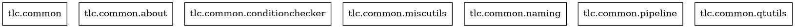

tlc.common.miscutils
Miscellaneous utilities.
This module contains generic utilities that may be used in any department/task. This utilities are not specific for any pipeline, they are usable in any Maya scene.
When there is a significant amount of elements related to a specific field, they may be moved to a new module. Though this should be done only in very special cases to avoid breaking backwards compatibility.
{kind=link}
Functions
|
Count Maya projects in path |
|
Delete channels (animCurves) and construction history for an element |
Delete channels (animCurves) and construction history for all the scene |
|
Delete all empty groups in the scene |
|
Return a list of the broken references in the scene |
|
Get copy-pasted nodes in scene |
|
Returns the path of current open Maya project (workspace) |
|
Return empty groups in current scene |
|
Get instances in the scene |
|
Get nodes in scene with invalid characters |
|
|
Return the path of the project containing a scene |
Return a list of reference nodes in the scene |
|
|
Return a list of scenes inside a directory structure, complying with the extensions supplied |
|
Import a file to current scene |
|
Check whether a node name is unique in the scene |
|
Reference a file from current scene |
Rename non-unique name nodes (adding a number as a postfix) |
|
|
Uninstance (copy) nodes |
Classes
|
Axis aligned bounding box (AABB) |